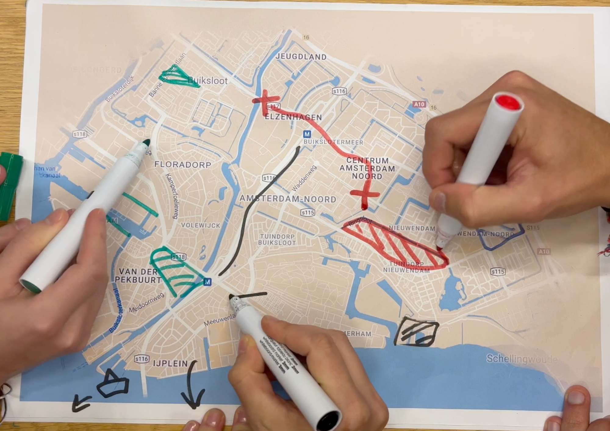

Participatory Mapping — Understanding Gentrification
Can a map capture how a neighbourhood feels?
The arrival of Amsterdam's North/South metro line changed how Amsterdam-Noord connects to the rest of the city. But what did those changes mean to the people already living there? As part of a research project on gentrification, we explored how residents experienced changes in their neighbourhood.
Instead of just asking people to describe these changes in words alone, we also encouraged them to draw directly onto maps. Using transparent sheets and coloured markers, they highlighted places they felt had changed for better (green) or worse (red), along with other observations. Each map became a personal interpretation of the same neighbourhood. The drawings were then digitalized and overlayed to explore where experiences overlapped or differed.
What I find interesting about this approach is how it brings together two very different ways of understanding a concept like gentrification: the personal, sometimes subjective experiences of residents and the spatial patterns that emerge when those experiences are viewed together.